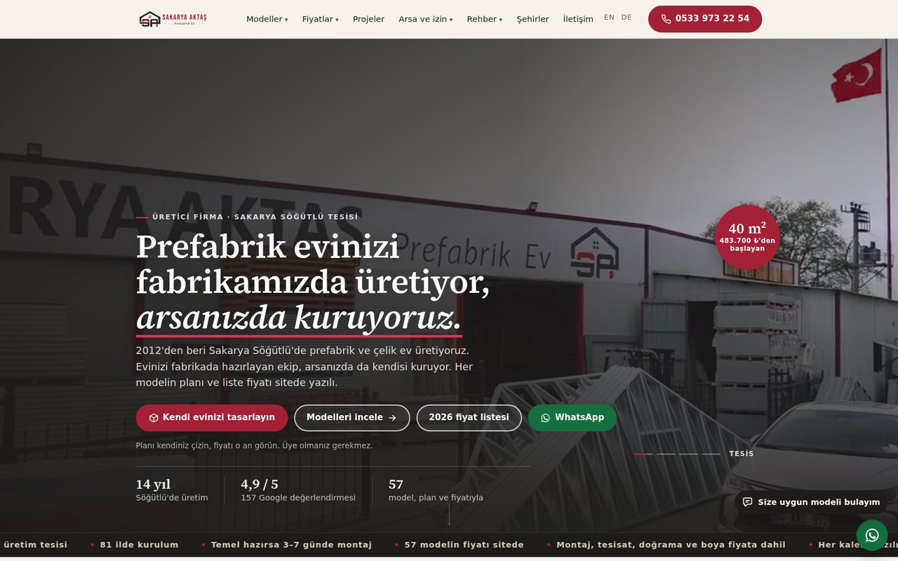
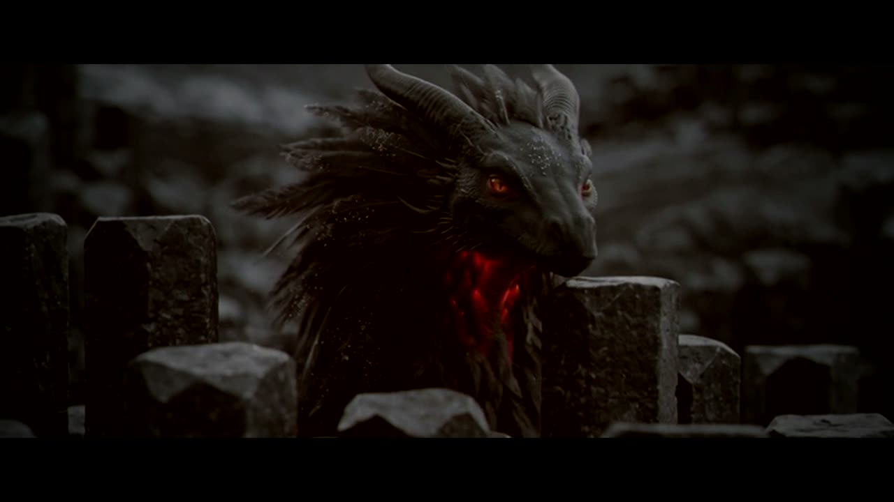
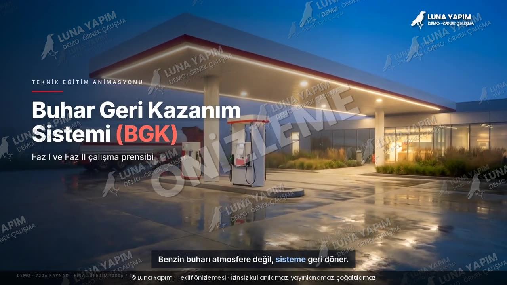

Bursa'da kurulmuş, kamerayı da kodu da kendi kullanan küçük bir yapım ve yazılım ekibi. Kurgu burada, çekim 81 ilde yerel ortakla.
Luna Yapım, 26 Mart 2026'da Bursa'da kuruldu. Video prodüksiyon, 3D görselleştirme ve web–yazılım işlerini tek ekipte toplayan küçük bir yapım şirketiyiz.
Başlangıç noktamız basitti: bir firmanın tanıtım filmi, web sitesi ve reklamı çoğu zaman üç ayrı ajansa gidiyor, üçü de birbirinin yaptığını bilmiyor. Biz üçünü aynı masada tutmak için kurulduk. İlk altı ayda bir prefabrik ev üreticisine tarayıcıda çalışan 3B ev tasarlayıcı ve yeni sitesini, bir kumaş toptancısına sanal mağaza ve dijital mankenli vitrinini, bir müzisyene klibini ve albüm kapağını, bir enerji firmasına teknik eğitim animasyonunu yaptık. Hepsi yayında; aşağıda.
Aynı dönemde kendi araçlarımızı yazdık: teklif hazırlayan ve müşteri adayı bulan Luna Pusula, fotoğraftan ürün sayfası çıkaran Trendyol otomasyonu, günlük yayın yapan TrendSaphiens. Bir ajansın elle yaptığı tekrar işlerini yazılıma devredince hem fiyat hem teslim süresi düşüyor; fiyat politikamız bu yüzden "ucuz değil, aracısız".
Kurgu, renk, 3D, web ve yazılım Bursa'da iki kişilik çekirdek ekipte. Karar hızlı, muhatap tek.
Yerinde çekim gereken işlerde ilinizdeki çözüm ortağımız sahaya çıkar; kurgu ve kalite kontrol yine bizde kalır. İş hangi ilde yapıldıysa o ilin sayfasında anılır.
Ne çekileceği, kaç günde teslim edileceği ve neyin dahil olduğu baştan yazılır. İki tur revizyon fiyata dahil.
Film, site ya da kampanya ne getirdi — birlikte okuruz. Kendi sitemizin rakamlarını da aynı dürüstlükle yayınlıyoruz.
Hepsi yayında; kartlar işin kendi sayfasına gider.
 CanlıPrefabrik ev üreticisi · Sakarya
CanlıPrefabrik ev üreticisi · SakaryaFirmanın 40 modelinin ölçülü kat planı tarayıcıda eve dönüşüyor. Ziyaretçi kat, oda düzeni, cephe, çatı ve terası seçiyor; evin içinde yürüyor, gece görünümüne geçiyor. Yanında seçime en yakın model ve liste fiyatı.
İşi incele → CanlıKumaş toptancısı · Bursa
CanlıKumaş toptancısı · BursaTrendyol kataloğu siteye taşındı; müşteri mağazanın içinde geziyor, kumaşı kadın ve erkek mankenin üzerinde görüyor. Satış, stok ve maliyet paneli; depodan Telegram'a atılan fotoğraf onayla ürün oluyor.
İşi incele →
CanlıPrefabrik ev üreticisi · SakaryaWordPress'ten statik yapıya taşındı; 380'den fazla sayfa, Türkçe-İngilizce-Almanca. Mobil hız 72'den 100'e; 28 günde aramadan gelen tıklama üç katına çıktı. Telefon, WhatsApp ve form ayrı ayrı sayılıyor.
Ölçülen sonuçlar → VideoKonut geliştiricisi · Avusturya
VideoKonut geliştiricisi · AvusturyaProjenin dış cephesi modellenip render edildi; yapının çevresinde dolaşan tek plan ve marka kapanışı. Satış ofisi açılmadan projenin görünür hâle gelmesi için.
Animasyonu izle →
VideoKendi maskotumuz · müzik klibiKliplerimizin sanatçısı olarak tasarladığımız YADE karakteri: silüet, malzeme ve hareket dili önce kâğıtta, sonra Blender'da. 2:40'lık klip beş dünyada geçiyor; kurgu şarkının vuruşlarına göre biçildi.
Klibi izle →
VideoAkaryakıt sektörü · demoFaz I ve Faz II çalışma ilkesi 30 saniyede: tanker boşaltımı, tank kesitinde seviye, dispenser içindeki akış. Bir petrol şirketinin eğitim talebi için hazırlanan demo.
Animasyonu izle →İşler sayfasındaki her kart gerçek bir müşteri ya da kendi yapımımız. Hangi ilde iş yaptıysak o ilin sayfasında anılır; başka ilde yapılmış gibi gösterilen tek iş yok.
Aramada kaç kişiye göründüğümüzü, kaç tıklama aldığımızı ve neyi henüz başaramadığımızı Şeffaflık sayfasında tarihli olarak yayınlıyoruz. Güzelleştirmiyoruz.
Çekim, kurgu, 3D ve yazılım aynı ekipte. Aradan çıkan her halka fiyattan düşüyor; ışıktan, sesten, renkten ve revizyon hakkından kısmıyoruz. Mekanizması Fiyatlar sayfasında.
Bir çekim gününden yatay, kare ve dikey sürümler, kısa kesitler ve kapak görselleri birlikte çıkar. Aynı işi dört kalemde faturalamıyoruz.
Kendi sitemizde de müşteri sitesinde de her değişiklik önce ölçülür. İşe yaramayan geri alınır; bunu da yazarız.
Bursa'dayız. Kurgu, renk, 3D ve yazılım Bursa'daki ekipte yapılır; yerinde çekim gereken işlerde 81 ildeki yerel çözüm ortaklarımızla çalışırız.
Çekirdek ekip iki kişi; bu bilerek böyle. Çekim, kurgu, 3D ve yazılımı aynı masada tutmak hem fiyatı hem teslim süresini kısaltıyor. İşin büyüklüğüne göre sahada yerel ortaklar ve oyuncu, ses, ışık ekipleri devreye girer.
26 Mart 2026'da açıldık. İlk yılın işleri — prefabrik ev üreticisi için 3B ev tasarlayıcı, kumaş toptancısı için sanal mağaza, müzik klibi, teknik eğitim animasyonu — İşler sayfasında.
Aynı gün net teklif, yazılı kapsam, iki tur revizyon dahil. Teslimden sonra ölçüm: videonun, sitenin ya da kampanyanın ne getirdiğini birlikte okuruz.
Hayır. 3D, animasyon, web ve reklam işleri tamamen uzaktan yürür; çekim gereken işlerde ilinizdeki ortağımız sahaya çıkar, kurgu yine bizde kalır.
Kurgu, post prodüksiyon ve içerik üretimi alanında yetiştirmek üzere stajyer ve öğrenci alıyoruz. Başvuru ve şartlar Kariyer ve Staj sayfasında.
İletişim
Projeni anlat; aynı gün kapsamı ve fiyatı yazılı gönderelim.